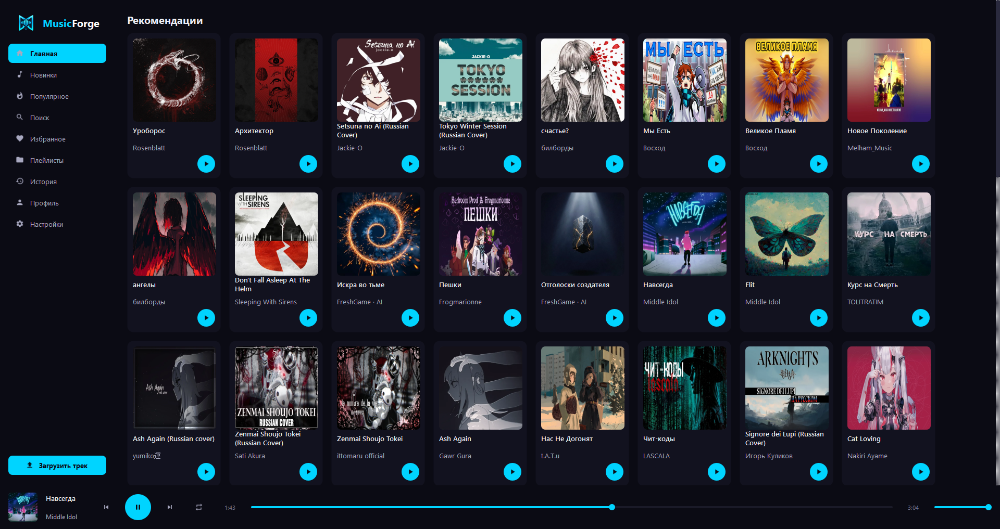

MusicForge Desktop
Кроссплатформенный десктопный клиент на PySide6 для комфортного прослушивания музыки с вашего личного сервера.

Основные возможности
Discord Rich Presence
Статус «Слушает MusicForge» в стиле Spotify. Отображение названия трека, исполнителя и обложки прямо в профиле.
Мультисерверность
Добавляйте несколько серверов и переключайтесь между аккаунтами без повторного ввода пароля.
Локализация
Поддержка русского и английского языков с возможностью переключения на лету в настройках.
Безопасность
Токены авторизации хранятся в системном хранилище (Windows Credential Manager, macOS Keychain).
История версий
v1.2.0
Мгновенные реакции и стабильная работа
- Бесконечная прокрутка (infinite scroll) для «Избранного» и «Истории прослушиваний».
- Добавлен экран загрузки (Splash Screen) при запуске приложения, чтобы было видно, что программа работает.
- Автоматическая отмена устаревших фоновых запросов при переключении страниц.
- Автоматическое переподключение к Discord Rich Presence при потере соединения.
- Улучшенная обработка сетевых ошибок (пул соединений и автоповторы при сбоях сервера 500/502/503/504).
- Потокобезопасное обновление токенов авторизации для исключения гонок данных.
v1.1.0
Быстрый вход и обложки в Discord
- Новый быстрый вход через браузер (Quick Login).
- Удобное переключение аккаунтов без потери сохраненных профилей.
- Починено отображение обложек треков в Discord Rich Presence.
- Повышение безопасности токенов (защита от перехвата из URL).
v1.0.0
Первый релиз
- Интеграция с Discord (статус, трек, исполнитель, обложка).
- Стильный неоновый интерфейс и кастомный плеер.
- Поддержка русского и английского языков (i18n).
- Автоматическая проверка обновлений при запуске.
- Загрузка треков вручную и импорт с YouTube.